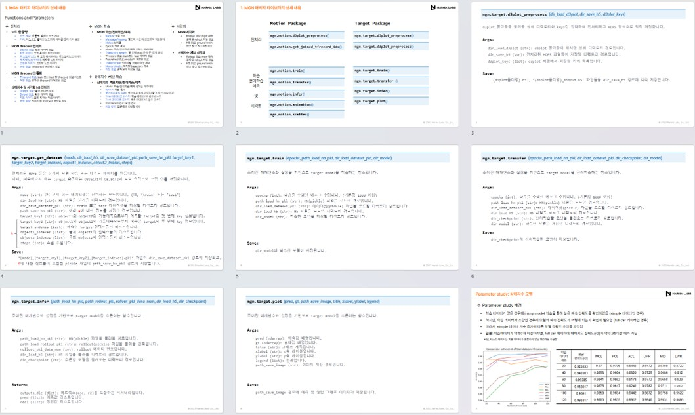

GNN기반 충돌해석 예측을 위한 딥러닝 모델링 라이브러리 개발
Development of a GNN-Based Deep Learning Library for Collision Analysis Prediction
Hyundai Motor Group · Sep. 2023 – Dec. 2023

Overview
앞선 선행 과제(2022–2023)에서 검증한 MeshGraphNet(MGN) 기반 충돌 예측 기술을 다양한 충돌 모드에 손쉽게 적용할 수 있도록 사용자 친화적인 딥러닝 모델링 패키지 라이브러리로 확장한다. LS-DYNA 등 상용 데이터 타입을 지원하고, 파라미터 조정으로 모델 커스터마이징이 가능하며, 3차원 시각화까지 통합한다.
My Role
- 역할: 실무책임자(AI Researcher, Narnia Labs)
- MGN 학습/전이학습/예측 코어 기능 모듈화 및 API 설계
- 전처리(노드 샘플링, tfrecord 변환), 학습, 시각화 파이프라인 통합
- 상해지수 커브 학습 모듈 개발 및 하이퍼파라미터 추천 로직 구현
- 샘플 데이터 학습 검증 및 라이브러리 활용 매뉴얼 작성
Methodology
PyTorch 기반으로 패키지를 구성하고 세 영역으로 모듈화한다. (1) 전처리: 원본 d3plot/binout → tfrecord 변환, 노드 샘플링, 히스토리 노드 관리.(2) MGN 학습/예측: radius·MessagePassing·noise·epoch·trajectory length 등 학습 하이퍼파라미터를 외부 인자로 노출, 학습/전이학습/예측을 단일 인터페이스로 제공.(3) 시각화: rollout 결과를 h5로 저장하고 3D 시각화로 표시.
Results / Key Outcomes
- 충돌 거동(스칼라·커브) + 상해지수 그래프 예측이 가능한 통합 패키지 완성
- 데이터 크기와 메쉬 정보를 고려한 자동 하이퍼파라미터 추천 기능 제공
- 3D 시각화 GUI로 예측 결과를 직관적으로 검토
- 현대차 충돌해석 데이터를 활용한 주요 충돌지표·거동 예측 AI/ML 모델링 방안 확보